특수용접기능사 (2012-04-08 기출문제)
1과목: 용접일반
1. 다음 중 직류 아크 용접에서 직류정극성의 특징으로 올바르게 설명한 것은?
- 비드 폭이 넓어진다.
- 모재의 용입이 얕다.
- 모재의 용입이 깊다.
- 용접봉의 용융이 빠르다.
(정답률: 88%)

2. 다음 중 산소용기의 각인 사항에 포함되지 않는 것은?
- 내용적
- 내압시험압력
- 가스충전일시
- 용기의 번호
(정답률: 60%)
3. 다음 중 표준불꽃(산소와 아세틸렌 1:1 혼합)의 구성요소를 표현한 것으로 틀린 것은?
- 불꽃심
- 속불꽃
- 겉불꽃
- 환원불꽃
(정답률: 78%)
4. 산소-아세틸렌가스 용접할 때 가스용접봉 지름을 결정을 하려고 하는데, 일반적으로 모재의 두께가 1㎜ 이상일 때 다음 중 가스용접봉의 지름을 결정하는 식은? (단, D 는 가스용접봉의 지름[㎜], T 는 판두께[㎜]를 의미한다.)
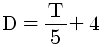
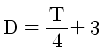
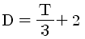
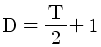
(정답률: 88%)
5. 다음 중 피복 아크 용접봉의 피복제가 연소한 후 생성된 물질이 용접부를 보호하는 형식에 따라 분류한 것에 해당되지 않는 것은?
- 반가스 발생식
- 스프레이 형식
- 슬래그 생성식
- 가스 발생식
(정답률: 73%)
6. 피복 아크 용접봉은 염기도(basicity)가 높을수록 내균열성은 좋으나 작업성이 저하되는데 다음 중 염기도 크기를 순서대로 올바르게 나열한 것은?
- E4311 < E4301 < E4316
- E4316 < E4301 < E4311
- E4301 < E4316 < E4311
- E4316 < E4311 < E4301
(정답률: 53%)
7. 다음 중 용접작업 전 준비를 위한 점검사항과 가장 거리가 먼 것은?
- 보호구의 착용 여부
- 용접봉의 건조 여부
- 용접설비의 점검
- 용접결함의 파악
(정답률: 87%)
8. 다음 중 기계적 이음과 비교한 용접 이음의 장점이 아닌 것은?
- 공정수가 절감된다.
- 재료를 절약할 수 있다.
- 성능과 수명이 향상된다.
- 모재의 재질변화에 대한 영향이 적다.
(정답률: 72%)
9. 다음 중 산소-아세틸렌 용접에서 후진법과 비교한 전진법의 설명으로 틀린 것은?
- 열 이용률이 나쁘다.
- 용접변형이 작다.
- 용접속도가 느리다.
- 산화의 정도가 심하다.
(정답률: 67%)
10. 다음 중 아크 길이에 따라 전압이 변동하여도 아크 전류를 거의 변하지 않는 특성은?
- 정전류 특성
- 아크의 부특성
- 정격사용률 특성
- 개로전압 특성
(정답률: 85%)
11. 다음 중 핫스타트(hot start)장치의 사용시 장점으로 볼 수 없는 것은?
- 기공(blow hole)을 방지한다.
- 비드 모양을 개선한다.
- 아크 발생은 어렵지만 용착금속 성질은 양호해 진다.
- 아크 발생 초기의 용입을 양호하게 한다.
(정답률: 74%)
12. 다음 중 가스용접 및 절단용 아세틸렌 가스가 갖추어야 할 성질로 틀린 것은?
- 연소속도가 늦어야 한다.
- 연소 발열량이 커야 한다.
- 불꽃의 온도가 높아야 한다.
- 용융금속과 화학반응이 일어나지 않아야 한다.
(정답률: 78%)
13. 다음 중 교류 아크 용접기의 네임 플레이트(name plate)에 사용률이 40%로 나타나 있다면 그 의미로 가장 적절한 것은?
- 용접작업 준비시간이 전체시간의 40% 정도이다.
- 용접시의 아크 발생시간이 전체의 40% 정도이다.
- 용접기가 쉬는 시간의 전체의 40% 정도이다.
- 용접시의 아크를 발생시키지 않고 쉬는 시간이 전체의 40% 정도이다.
(정답률: 88%)
14. 다음 중 용접 용어에서 경사 각도를 갖도록 절단하는 것을 무엇이라 하는가? (단, 판재에 맞대기 용접 홈을 만들기 위함이다.)
- 헬리컬(helical)절단
- 베벨(bevel)절단
- 수퍼(super)절단
- 워엄(worm)절단
(정답률: 70%)
15. 다음 중 가스 용접기의 압력조정기가 갖추어야 할 점으로 틀린 것은?
- 조정 압력과 사용 압력이 차이가 작을 것
- 동작이 예민하고 빙결(氷結)되지 않을 것
- 가스의 방출량이 많더라도 흐르는 양이 안정될 것
- 조정 압력이 용기 내의 가스량 변화에 따라 유동성이 있을 것
(정답률: 57%)
16. 다음 중 수중절단시 고압에서 사용이 가능하고 수중절단시 기포발생이 적어 가장 널리 사용되는 연료가스는?
- 수소
- 질소
- 부탄
- 벤젠
(정답률: 92%)
17. 다음 중 아크 에어 가우징 장치에 해당하지 않는 것은?
- 가우징 토치
- 용접기(전원)
- 텅스텐 전극
- 압축공기(콤프레셔)
(정답률: 77%)
18. SCr이나 SNC 강은 용접열로 인하여 뜨임취성이 발생되는데 다음 중 뜨임취성을 방지하기 위해 첨가하는 원소는?
- Mo
- Ni
- Cr
- Ti
(정답률: 56%)
19. 다음 중 강은 온도가 높아지면 전연성이 커지나 200~300℃ 부근에서는 메짐(취성)이 나타나는데 이를 무엇이라 하는가?
- 고온메짐
- 청열메짐
- 적열메짐
- 뜨임메짐
(정답률: 57%)
20. 다음 중 구조용 합금강에 대하여 풀림 처리를 하는 이유와 가장 거리가 먼 것은?
- 가공 후의 잔류응력 제거
- 재질의 경화를 목적으로 할 때
- 합금 원소 및 불순 원소의 확산에 의한 조직의 균일화
- 압연, 단조에 의한 가공 경화로 냉간 소성 가공이 곤란한 경우
(정답률: 45%)
21. Cu 합금 중 7:3 황동의 주요 성분 비율을 올바르게 나타낸 것은?
- Cu : 30%, Al : 70%
- Cu : 30%, Zn : 70%
- Cu : 70%, Al : 30%
- Cu : 70%, Zn : 30%
(정답률: 74%)
22. 다음 중 주철의 종류가 아닌 것은?
- 보통주철
- 고급주철
- 합금주철
- 진백주철
(정답률: 76%)
23. 다음 중 비철 금속에서 나타나는 시효경화(석출 경화) 현상에 관한 설명으로 옳은 것은?
- 담금질된 재료를 160℃ 정도로 가열하여 시효경화를 촉진시키는 것을 자연시효라 한다.
- 공랭 실린더 헤드 및 피스톤 등에 사용되는 Y합금은 시효경화성이 없는 합금이다.
- 시효경화의 원인은 고용체의 용해도가 온도의 변화에 따라 심하게 변화하는 것에 기인하다.
- 석출경화가 일어나지 않는 합금의 대표적인 것은 구리-알루미늄계의 두랄루민이다.
(정답률: 39%)
24. 다음 중 스테인리스강의 종류에 속하지 않는 것은?
- 페라이트계 스테인리스강
- 마텐자이트계 스테인리스강
- 석출경화형 스테인리스강
- 레데뷰라이트계 스테인리스강
(정답률: 59%)
25. 금속 침투법 중 세라다이징은 무슨 금속을 침투시킨 것을 말하는가?
- Zn
- Cr
- Al
- B
(정답률: 54%)
26. 탄소강 주강품 종류 중 “SC 360” 이라는 기호에서 “360”이 나타내는 의미로 옳은 것은?
- 인장강도(N/mm2)
- 압축강도(N/mm2)
- 열팽창계수
- 탄소함유량(%)
(정답률: 77%)
27. 탄소강의 담금질 효과는 냉각액과 밀접한 관계가 있는데 정지상태의 물의 냉각 속도를 1로 했을 때 다음 중 냉각속도가 가장 빠른 것은?
- 소금물
- 공기
- 합성유
- 광물유
(정답률: 74%)
28. 다음 중 정련된 용강을 노 내에서 Fe-Mn, Fe-Si, Al 등으로 완전 탈산시킨 강은?
- 킬드강
- 세미킬드강
- 림드강
- 캡드강
(정답률: 70%)
29. 다음 중 용접용 지그 선택의 기준으로 적절하지 않은 것은?
- 물체를 튼튼하게 고정시켜 줄 크기와 힘을 있을 것
- 변형을 막아줄 만큼 견고하게 잡아줄 수 있을 것
- 물품의 고정과 분해가 어렵고 청소가 편리할 것
- 용접 위치를 유리한 용접자세로 쉽게 움직일 수 있을 것
(정답률: 87%)
30. 다음 중 각 층마다 전체 길이를 용접하면서 쌓아 올리는 방법으로써 능률이 좋지만 한랭 시나 구속이 클 때, 판 두께가 두꺼울 때 첫 층에서 균열이 생길 우려가 있는 용착법은?
- 대칭법
- 블록법
- 덧살올림법
- 캐스케이드법
(정답률: 68%)
31. 다음 중 CO2 가스 아크용접에 가장 적합한 금속은?
- 연강
- 알루미늄
- 스테인리스강
- 동과 그 합금
(정답률: 63%)
32. 다음 중 용접 작업시 감전재해의 예방대책으로 틀린 것은?
- 용접작업 중 용접봉 끝부분이 충전부에 접촉되지 않도록 한다.
- 파손된 용접홀더는 신품으로 교체하여 사용한다.
- 피복이 손상된 용접 홀더선은 절연 테이프로 수리한 후 사용한다.
- 본체와 연결부는 비절연 테이프로 감아서 사용한다.
(정답률: 83%)
33. 다음 중 용착금속의 인장가동 55kgf/㎟ 에 안전율이 6 이라면 이음의 허용응력은 약 몇 kgf/㎟ 인가?
- 330
- 92
- 9.2
- 33
(정답률: 56%)
34. 다음 중 불활성 가스 아크 용접의 장점이 아닌 것은?
- 아크가 안정되고 스패터가 적다.
- 열 집중성이 좋아 고능률적이다.
- 피복제나 용제가 필요 없다.
- 청정작용이 없어 산화막이 약한 금속이 용접이 가능하다.
(정답률: 68%)
35. 산업용 로봇의 작업안전수칙 중 사용상 안전지침에 대한 설명으로 틀린 것은?
- 일시적으로 로봇이 움직이지 않는다고 속단하지 않는다.
- 한 동작을 반복한다고 해서 그 동작만 반복한다고 가정하지 않는다.
- 안전장치의 작동상태는 작업시간 전 1회만 점검한다.
- 방호울 또는 방책 등을 개방시 로봇의 정지 상태를 확인하여야 한다.
(정답률: 87%)
2과목: 용접재료
36. 다음 중 KS에서 규정한 방사선 투과시험 필름 판독에서 제1종 결함에 해당하는 것은?
- 노치 및 이와 유사한 결함
- 슬래그 혼입 및 이와 유사한 결함
- 갈라짐 및 이와 유사한 결함
- 둥근 블로홀 및 이와 유사한 결함
(정답률: 37%)
37. 다음 중 열영향부의 기계적 성질에 대한 설명으로 틀린 것은?
- 강의 열영향부는 본드로부터 원모재 쪽으로 멀어질수록 최고가열온도가 높게 되고, 냉각속도는 빠르게 된다.
- 본드에 가까운 조립부는 담금질 경화 때문에 강도가 증가한다.
- 최고경도가 높을수록 열영향부가 취약하게 된다.
- 담금질 경화성이 없는 오스테나이트계 스테인리스강에서는 최고경도를 나타내지 않고, 오히려 조립부는 연약하게 된다.
(정답률: 35%)
38. 다음 중 TIG 용접에서 나타나는 용접부의 결함으로 볼 수 없는 것은?
- 균열(crack)
- 기공(porosity)
- 슬래그 혼입(slag inclusion)
- 비금속 개재물(nonmetallic inclusion)
(정답률: 48%)
39. 다음 중 CO2 용접 토치의 부속품에 해당하지 않는 것은?
- 오리피스(orifice)
- 디퓨즈(difuse)
- 콜릿(collet)
- 콘택트 팁(contact tip)
(정답률: 48%)
40. 다음 중 높은 진공 속에서 충격열을 이용하여 용융하는 용접법은?
- 펄스 용접
- 퍼커션 용접
- 전자빔 용접
- 고주파 용접
(정답률: 47%)
41. 다음 중 서브머지드 아크 용접에서 용접헤드에 속하지 않는 것은?
- 용제 호퍼
- 와이어 송급장치
- 불활성가스 공급장치
- 제어장치 콘택트 팁
(정답률: 42%)
42. 다음 중 불활성 가스 금속 아크 용접 장치에 있어 제어장치의 기능과 가장 거리가 먼 것은?
- 예비가스 유출시간(preflow time)
- 크레이터 충전 시간(crate fill time)
- 가스지연 유출시간(post flow time)
- 스파크 시간(spark time)
(정답률: 64%)
43. 다음 중 가스 절단 작업시 주의하여야 할 사항으로 틀린 것은?
- 호스가 꼬여 있는지 확인한다.
- 가스절단에 알맞은 보호구를 착용한다.
- 절단진행 중 시선은 주위의 먼 부분을 향한다.
- 절단부는 예리하고 날카로우므로 주의해야 한다.
(정답률: 91%)
44. 다음 중 용접 흄이나 가스의 중독을 방지하기 위한 방법과 가장 거리가 먼 것은?
- 작업 중 발생한 흄이나 가스는 흡입되지 않도록 방독마스크나 방진마스크를 착용한다.
- 밀폐된 곳에서의 용접 작업시에는 강제 순환기식 환기장치나 압축공기를 분출시키면서 작업한다.
- 밀폐된 장소에서는 혼자서 작업하지 말고 반드시 관리자의 관리 하에서 작업하여야 한다.
- 작업시 불편함을 느낄 경우 보호구는 착용하지 않아도 된다.
(정답률: 91%)
45. 다음 중 아크 용접에서 아크를 중단시켰을 때, 중단된 부분이 납작하게 파여진 모습으로 남는 부분을 무엇이라 하는가?
- 스패터
- 오버랩
- 슬래그 섞임
- 크레이터
(정답률: 85%)
46. 다음 일렉트로 슬래그 용접에 관한 설명으로 틀린 것은?
- 수직 상진으로 단층 용접을 하는 방식이다.
- 용접 전원으로는 정전압형의 교류가 적합하다.
- 용융 금속의 용착량이 100%가 되는 용접 방법이다.
- 높은 아크열을 이용하여 효율적으로 용접하는 방식이다.
(정답률: 25%)
47. 다음 중 TIG 용접기로 알루미늄을 용접할 때 직류역극성을 사용하는 가장 중요한 이유는?
- 전극이 심하게 가열되지 않으므로 전극의 소모가 적기 때문이다.
- 산화막을 제거하는 청정작용이 이루어지기 때문이다.
- 비드 폭이 좁고, 모재의 용입이 깊어지기 때문이다.
- 전자가 모재에 강하게 충돌하므로 깊은 용입을 얻을 수 있기 때문이다.
(정답률: 67%)
48. 다음 중 연납의 특성에 관한 설명으로 틀린 것은?
- 연납땜에 사용하는 용가제를 말한다.
- 주석-납계 합금이 가장 많이 사용된다.
- 기계적 강도가 낮으므로 강도를 필요로 하는 부분에는 적당하지 않다.
- 은납, 황동납 등이 이에 속하고 물리적 강도가 크게 요구될 때 사용된다.
(정답률: 60%)
49. 다음 중 플라스마(plasma)아크 용접의 특징으로 볼 수 없는 것은?
- 용접속도가 빠르므로 가스의 보호가 불충분하다.
- 용접부의 금속학적, 기계적 성질이 좋으며 변형도 적다.
- 무부하 전압이 일반 아크 용접기의 2~5배 정도 높다.
- 핀치 효과에 의해 전류 밀도가 작아지므로 용입이 얕고 비드 폭이 넓어진다.
(정답률: 53%)
50. 다음 중 용접방법과 시공방법을 개선하여 비용을 절감하는 방법에 대한 설명으로 틀린 것은?
- 적당한 아크길이와 용접 전류를 유지한다.
- 피복 아크 용접을 할 경우 가능한 한 용접봉이 긴것을 사용한다.
- 사용 가능한 용접방법 중 용착속도가 최대인 것을 사용한다.
- 모든 용접에 안전을 고려하여 과도한 덧살 용접을 한다.
(정답률: 79%)
3과목: 기계제도
51. 선의 종류별 용도가 잘못 짝지어진 것은?
- 가는 실선 -치수 보조선
- 굵은 1점 쇄선 -특수 지정선
- 가는 1점 쇄선 -피치선
- 가는 2점 쇄선 -중심선
(정답률: 61%)
52. 다음 도면에서 드릴 구멍의 위치에 관한 설명으로 맞는 것은?
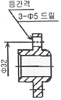
- 90° 간격으로 배열되어 있다.
- 120° 간격으로 배열되어 있다.
- 150° 간격으로 배열되어 있다.
- 임의의 위치에 적당하게 배열되어 있다.
(정답률: 49%)
53. 도면의 긴 쪽 길이를 가로방향으로 한 X형 용지에서 표제란의 위치로 가장 적당한 것은?
- 오른쪽 중앙
- 왼쪽 위
- 오른쪽 아래
- 왼쪽 아래
(정답률: 80%)
54. 용접부의 보조기호에서 제거 가능한 이면 판재를 사용하는 경우의 표시 기호는?
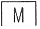
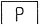
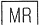
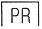
(정답률: 82%)
55. 수나사 기호 “M52×2”에서 수나사의 바깥지름은 몇 ㎜ 인가?
- 2
- 50
- 104
- 52
(정답률: 62%)
56. 축에 반달 키가 조립되어 있는 단면도에 대해서 가장 올바르게 표현한 것은?
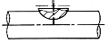
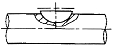
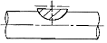
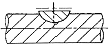
(정답률: 49%)
57. 보기와 같은 용접기호 도시방법에서 기호 설명이 잘못된 것은?
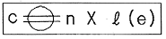
- c: 용접부의 반지름
- ℓ :용접부의 길이
- n :용접부의 개수
- : 심(seem)용접을 의미
(정답률: 60%)
58. 그림과 같이 잘린 원뿔의 전개도가 가장 올바른 것은?
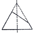
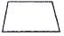
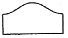
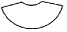
(정답률: 66%)
59. 제 3각법에 대하여 설명한 것으로 틀린 것은?
- 평면도는 정면도의 상부에 도시한다.
- 좌측면도는 정면도의 좌측에 도시한다.
- 우측면도는 평면도의 우측에 도시한다.
- 저면도는 정면도 밑에 도시한다.
(정답률: 65%)
60. 그림과 같이 제 3각법 정투상도에 가장 적합한 입체도는?
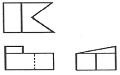
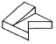
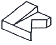
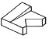
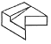
(정답률: 73%)